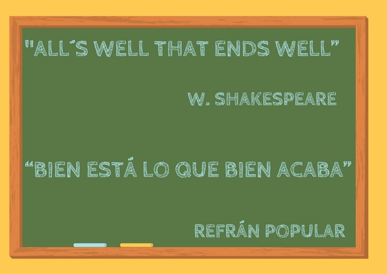
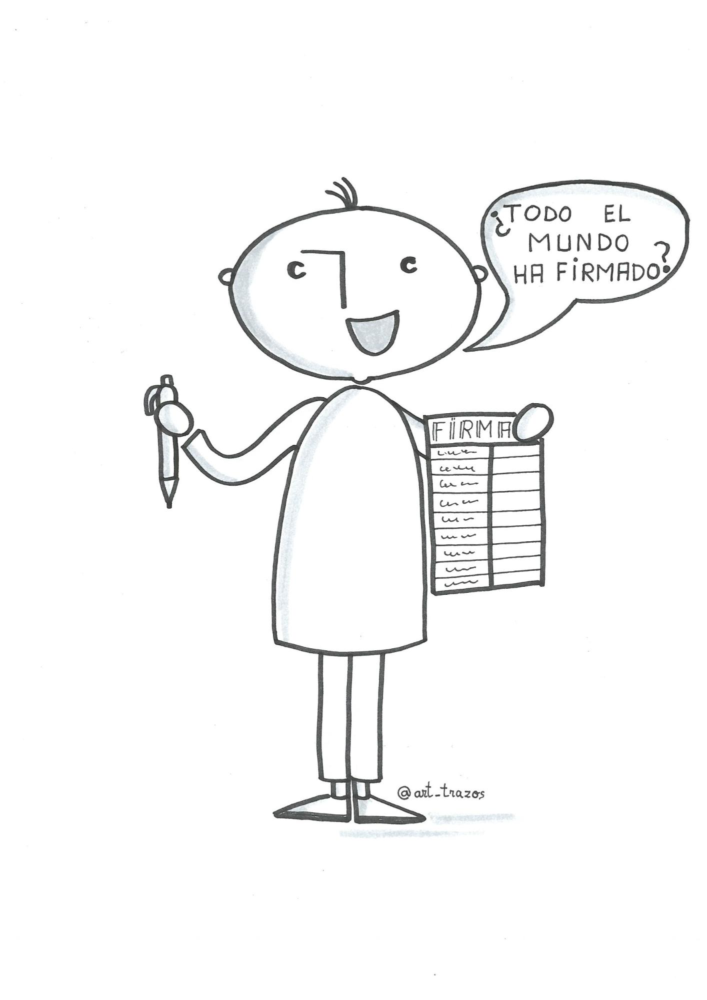
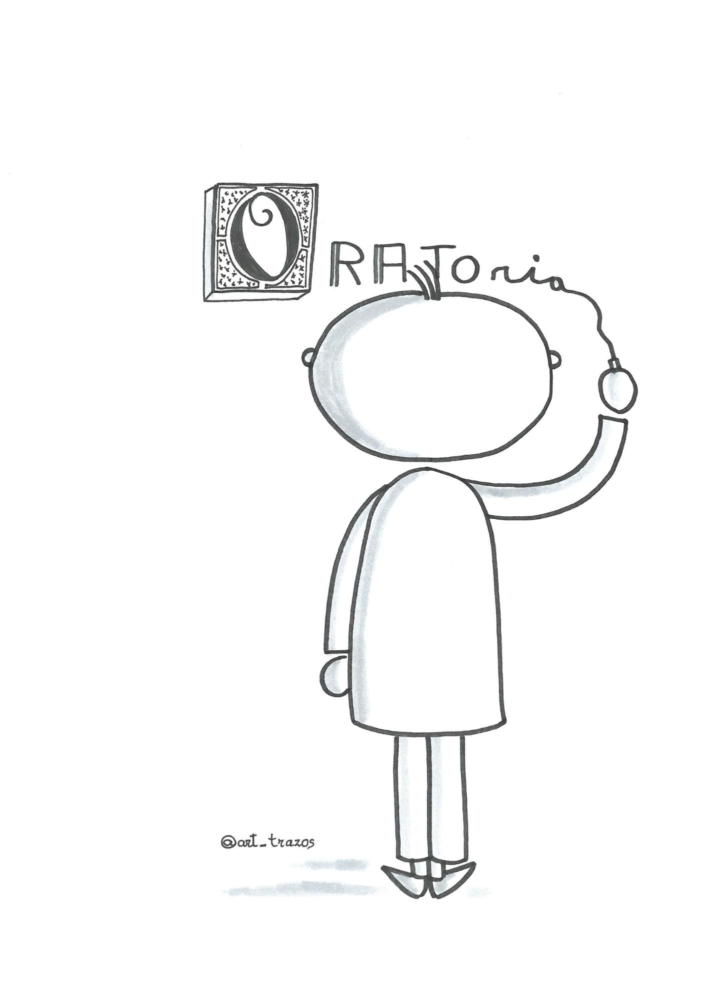

4.2 DISPOSITIO
Selecciona, ordena y deja espacio para la repetición.
La organización juega un papel clave para lograr la claridad y la coherencia necesaria para la eficacia de una comunicación.
El lenguaje oral es lineal, veloz (comparado con la lectura y en menor grado con la escucha) y sin marcha atrás. Por tanto, para favorecer las conexiones entre las ideas que se irán sucediendo es necesario proveer al público de una estructura en la que pueda acomodar la información y relacionarla entre sí. Para compensar las posibles pérdidas de información en el auditorio durante la escucha, se deben tener previstos modos de repetir las ideas centrales a lo largo del discurso. No se trata de repetir de manera exacta. Hablamos de anticipar, resumir, sintetizar, recapitular…
J.A Hernández y M.C García (2008) distinguen tres funciones de la arquitectura de un discurso:
- Didácticas: con el fin de facilitar que los oyentes mantengan la atención y la concentración y que puedan aprender con el contenido de la charla. Debemos dividir el discurso y abrir pausas entre las partes o articularlas.
- Estratégicas: para escalonar los argumentos, para favorecer que los oyentes sientan que son ellos mismos los que descubren los contenidos, distribuyendo datos para generar interés, para estimular determinados sentimientos.
- Estéticas: la ordenación adecuada de elementos literarios favorece la comprensión y asimilación del mensaje.
Quintiliano, citado por Sam Leith (2011), aunque reconoce la importancia de la dispositio, no establece un número fijo de partes del discurso ya que el orador debe utilizar “su sagacidad, su discernimiento, su inventiva y su juicio para decidir por sí mismo”.
En Charlas Ted, Chris Anderson (2016) nos desvela la estructura que siguen la mayoría de las charlas de Ken Robinson:
- Introducción
- Contexto
- Conceptos principales
- Implicaciones prácticas
- Conclusión
Sin embargo, retomando la idea de Quintiliano, también dice “el atractivo de las charlas de sir Ken va mucho más allá de su simplicidad estructural, y ni él ni yo recomendaríamos que todo el mundo adoptara esta misma estructura. Lo que importa es que tu encuentres la que desarrolle con más fuerza tu línea argumental en el tiempo disponible, y que muestre con claridad cómo se vinculan a ella todos los elementos de la charla”
Tomaremos aquí la estructura más sencilla posible: inicio, desarrollo y final.
4.2.1 INICIO
Las funciones de la introducción son:
-Saludar a los oyentes
-Disponerlos para aceptar al orador y su discurso, y
-Facilitar la apropiación de los contenidos que se van a desarrollar.
Es una parte obligada y que viene condicionada en cuanto a su duración y contenido por los objetivos y las fases intermedias de la charla (por lo que no conviene prepararla en primer lugar).
En esta fase se produce la conexión humana, es el momento en el que ethos debe salir, ir donde está el público y ganarlo a través de la credibilidad, la empatía y la autenticidad. Es también el momento de hacer explícitas las cuestiones a las que se va a dar respuesta, delimitar el tema, deshacer prejuicios. A través de la introducción preparamos el ánimo y la comprensión del auditorio para las fases siguientes.
Os invitamos a que analicéis la fase inicial de cinco conferenciantes:
María Acaso (1h:03min - 1h:06min) y
César Bona (1h:51min - 2h: 01 min)
David Cuartielles (1h:14 min -1h:17m)
Luz Rello (11 min:50 s - 20 min)
Aprender con dislexia es posible. Metodologías innovadoras from Ibercaja Aula en Red on Vimeo.
Pablo Albo (0 min -2min 39 seg)
¿Has reconocido algunos de los elementos vistos en este módulo? ¿qué charla quieres seguir escuchando? ¿por qué? ¿qué cualidades del orador te han enganchado? ¿qué contenidos han despertado tu curiosidad?
4.2.2 DESARROLLO
En esta parte se articulan los contenidos del discurso (logos es el protagonista). Se recomienda que se prepare en primer lugar puesto que tanto la introducción como el final se deben basar en ella.
Debe tener su propia estructura interna, por ejemplo:
- Narrativa: contar una historia con un hilo temporal.
- Árbol: a partir de la línea argumental se desarrollan las ideas secundarias y las conclusiones que de ella se derivan. Puede incluir una fase inicial de “poda” en la que se explicitan las ideas contrarias/diferentes a la que se va a exponer ayudando al público a focalizarse.
- Bucle: a través de diferentes ejemplos se vuelve varias veces a la idea inicial.
- Vista de pájaro: se ofrece una visión global en un primer momento para posteriormente analizar los detalles
- Orden lógico: se validan las ideas presentadas a través de los principios de la lógica (causa-efecto, el todo es mayor que las partes, premisas verdaderas llevan a conclusiones verdaderas…)
- Investigación: se plantea un problema y se sondean las posibles soluciones que son descartadas una a una hasta que se llega a la solución viable.
En esta fase de explicación deberemos aplicar el conocimiento disponible sobre neuroeducación, aprendizaje y didáctica (procesos relacionados con la atención, memoria, jerarquía y relación entre las ideas, secuenciación de los aprendizajes, partir de lo conocido…).
En Charlas TED, Chris Anderson (2016) habla de la importancia de humanizar los contenidos referenciales del discurso y nos da un consejo “selecciona, mezcla, combina y argumenta de la manera que aporte más fuerza y autenticidad a la idea que deseas construir”. En una charla se combina explicación, narración, persuasión... para humanizarla disponemos de los siguientes recursos:
- Sentido del humor.
- Anécdotas, mejor si son verdaderas y personales.
- Validación de terceros.
- Elementos visuales potentes.
4.2.3 CONCLUSIÓN

El primer objetivo es claro: que el auditorio no comience a recoger sus objetos personales y a ponerse el abrigo en el momento en el que considere que llegas al final.
Queremos acabar con fuerza y por tanto, buscamos un nuevo pico en la atención de nuestra audiencia. Es el momento de recopilar lo sucedido en la jornada, hacer explícita (o nombrar de nuevo) la idea central que se ha compartido, pedir a los oyentes una acción a partir de ella (compartir un sueño, seguir investigando, desarrollar una práctica de aula…) y, por supuesto, agradecerles su presencia y escucha. En el caso de que se abra un turno de preguntas finales, la última intervención no debería convertirse en las últimas palabras. Es importante que tengas preparado un cierre para el turno de preguntas y el cierre de la sesión.
Los recursos son variados: una breve historia, una metáfora, una imagen motivadora, una cita famosa, una estructura circular que nos lleve al comienzo…
Los manuales de oratoria clásicos y modernos no contemplan el caso particular de las asesorías de formación. Se dice, que cuando pensamos en el final impactante de una ponencia, una voz suena en nuestro interior rompiendo la magia del “último acorde”...

La hoja de firmas. @art_trazos
4.2.4 PELIGROS EN ESTA FASE

- No tomar en cuenta el tiempo disponible, nivel de conocimientos previos del auditorio y la capacidad de asimilación de nuevos contenidos de los receptores. A veces cuesta renunciar a los contenidos acumulados en la fase de inventio lo que inevitablemente conlleva a presentarlos o de una manera superficial o excediendo el tiempo marcado.
- Falsos comienzos y falsos finales. Suceden cuando se improvisan y se suceden párrafos que alargan innecesariamente el principio y el final. En el caso del falso inicio, el público está esperando a que comience la ponencia con cierta inquietud y en el falso final se empieza a poner la chaqueta.
- Efecto “título del cuaderno” (esos títulos que comienzan con una letra bien diseñada, con trazos elegantes y que poco a poco se van desdibujando y terminan en un garabato). El equivalente en oratoria es una preparación desigual de las partes del discurso o, en el peor de los casos, la improvisación de la introducción y el final lo que puede llevar a los falsos comienzos y finales, vacíos de la comunicación, muletillas…

Trabaja todas las partes por igual. @art_trazos